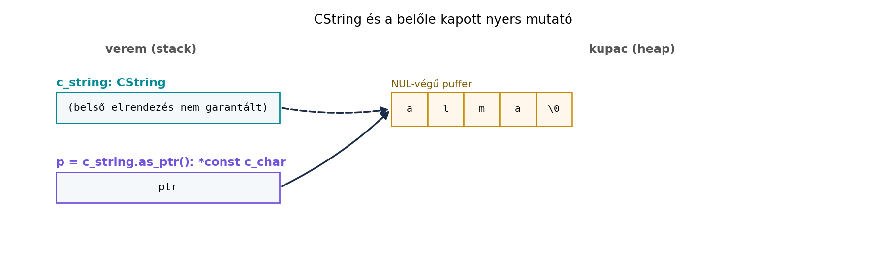

Egy évtizedes C++-kódbázis ritkán cserélhető le egyik napról a
másikra Rustra. A gyakorlatban a két nyelv ugyanabban a folyamatban él:
meglévő C vagy C++ könyvtárat hívunk Rustból, vagy egy új Rust
komponenst teszünk elérhetővé a régi C++ kliens számára. A közös nevező
a C ABI: a C függvényhívási konvenció, a C adatszerkezetek és a C
stringek. A Rust nem beszéli a C++ osztályok, túlterhelt függvények,
kivételek vagy sablonok nyelvét, de a C ABI-n keresztül bármilyen C++
kód elérhető, ha extern "C" függvényekbe csomagoljuk.
Az rkv mintaprojektben most azt a hidat építjük meg, amelyen a
későbbi C++ kliens átkelhet: az rkv-ffi crate egy C API-t
exportál, amelyet a C++-együttműködés a cxx
crate-tel és a fokozatos migráció alfejezet használ tovább, a
záróprojektben pedig a teljes rendszer része lesz.
Definíció. Az ABI (application binary
interface) az a bináris szerződés, amely meghatározza, hogyan adjuk át
az argumentumokat, hogyan rendezzük a struktúrákat, és hogyan nevezzük a
szimbólumokat. A Rust alapértelmezett ABI-ja nem stabil, ezért C-vel
való együttműködésnél mindig explicit extern "C" blokkot
használunk.
Definíció. A #[repr(C)] attribútum
C-kompatibilis memóriaelrendezést ad a Rust típusoknak: a mezők
sorrendje megegyezik a deklaráció sorrendjével, nincs újrarendezés, és a
padding a C szabályait követi. A #[repr(Rust)] (az
alapértelmezett) esetén a fordító szabadon átrendezheti a mezőket, ezért
C-nek átadott struktúrákhoz mindig #[repr(C)] kell.
Két külön kérdés. Egy FFI-határ tervezésekor két
dolgot kell szétválasztani. (1) Az ABI-kompatibilitás
azt dönti el, hogy a két oldal ugyanúgy értelmezi-e a bájtokat:
#[repr(C)] elrendezés, C-kompatibilis mezőtípusok
(c_int, mutatók, repr(C) structok, nem
String/Vec/&T), a hívási
konvenció (extern "C"). (2) Az értékérvényességi és
ownership szerződés azt, hogy az átadott bájtok érvényes
értéket jelentenek-e, ki szabadítja fel őket, meddig élnek, és
használhatók-e egyszerre több szálról. Egy *const c_char
ABI-szempontból tökéletes, a szerződés (NUL-végű? UTF-8? meddig él?)
viszont nincs a típusában: ezt dokumentálni és ellenőrizni kell.
Fordítva, egy repr(C) struct mezői csak akkor
C-kompatibilisek, ha maguk is azok.
Ajánlás (nyers mutatók a határon). A Rust referencia
(&T, &mut T) a C ABI-ban hívási
szinten mutatóként adódna át, de a Rust-oldali érvényességi garanciái
(nem null, igazított, él, kizárólagos vagy megosztott) C-ből nem
kényszeríthetők ki. Ezért az egyszerű határ-API-ban nyers mutatókat
(*const T, *mut T) használunk, és a függvény
belsejében ellenőrizzük őket (null, hossz), mielőtt referenciát képzünk
belőlük. Az ownership-átadásról a hívóval egyértelműen
megállapodunk.
Szabály (panic a határon). Egy
extern "C" függvényből kilépő Rust pánik
nem terjedhet a C hívóba. A Rust 1.81 óta az
extern "C" függvényből kilépő pánik a folyamat
leállítását (abort) okozza (korábban UB volt). Három
külön eset van: (a) Rust pánik az extern "C"
Rust-exportban: abort, hacsak a függvény törzsét
catch_unwind-del nem védjük; (b) idegen kivétel
(például C++ throw), amely Rust frame-eken át terjedne: ez
más eset, mint a Rust pánik. A nem unwind ABI-n
(extern "C") Rustba belépő idegen unwind nem
definiált viselkedés lehet; a Rust a pánikra ad
abort-garanciát, az idegen kivételre nem (a Rustonomicon külön
tárgyalja). A szabály ezért: C++ kivétel nem hagyhatja el azt a C++
függvényt, amelyet Rustból (vagy Rust-exportból C++-ból)
extern "C" határon hívunk; a C++ oldalon
try { ... } catch (...) { return RKV_ERR; } alakú védelem
kell. Ha a terjedést szándékosan engedjük, az
extern "C-unwind" ABI kell mindkét oldalon; (c) a
panic = "abort" profil: ekkor nincs unwind, a
catch_unwind nem fog el semmit, a pánik azonnal leállítja a
folyamatot.
Az rkv-ffi explicit policyja: a crate
panic = "unwind" profillal készül (ez a Cargo
alapértelmezése dev és release profilban is),
és minden státuszkódot adó exportált függvény (rkv_set,
rkv_get, rkv_delete) törzse a
guarded segédfüggvényen megy át (a new,
free és buffer_free életciklus-függvények nem
adnak státuszt, és nem tartalmaznak pánikolható logikát), amely a
pánikot RKV_PANIC státuszkóddá alakítja. A
catch_unwind itt a ténylegesen pánikolható határ
védelme, nem mindent felfogó háló: a szokásos hibákat
(Result) továbbra is státuszkóddá alakítjuk, a
catch_unwind csak a váratlan pánikot kezeli. Ha a projekt
panic = "abort" profilt választ, a dokumentáció ezt
vállalja: a pánik leállítja a folyamatot, RKV_PANIC nem
keletkezik.
Szabály. A #[no_mangle] attribútum
megakadályozza a szimbólum átnevezését, így a függvény neve a C linker
számára látható marad. A Rust 2024-es editionben ez az attribútum az
unsafe attribútumok közé került, ezért #[unsafe(no_mangle)]
formában kell írni; a 2021-es editionben a #[no_mangle]
továbbra is működik. (Ellenőrzési igény: a pontos szintaxis a
telepített toolchain verziójától függ.)
Egy meglévő C könyvtár legegyszerűbb hívása kézzel írt
extern blokkal történik. A 2024-es editionben az extern
blokk unsafe extern "C", a C int
Rust-megfelelője pedig a platformfüggetlen c_int
(std::ffi::c_int), nem az i32:
// mylib.h
int add(int a, int b);use std::ffi::c_int;
// Kézzel írt kötés (2024 edition: unsafe extern)
unsafe extern "C" {
fn add(a: c_int, b: c_int) -> c_int;
}
fn main() {
// SAFETY: a C függvénynek nincs előfeltétele, és a hívás nem sért Rust-invariánst.
let sum = unsafe { add(2, 3) };
println!("{sum}");
}A linkeléshez a build.rs-ben meg kell adni a könyvtárat.
Nagyobb C fejléchez a kézi fordítás hibalehetőség; erre való a
bindgen, amely a C fejlécből generálja a Rust kötést. Az
alábbi teljes, ellenőrzött példa a C forrást is lefordítja (a
cc crate), a kötést az
OUT_DIR-be generálja (nem a forrásfába),
és onnan include!-olja. A Cargo.toml-ban
[build-dependencies] közé cc és
bindgen kerül; a bindgen a
libclang könyvtárat igényli (Ubuntu:
libclang-dev), amely a natív toolchain része.
Kódblokk — fájl: build.rs · művelet: új fájl
egy önálló cargo new projektben (mellé
mylib.c, mylib.h, wrapper.h, ahol
a wrapper.h a #include "mylib.h" sort
tartalmazza) · ellenőrzés: cargo run → 5
use std::env;
use std::path::PathBuf;
fn main() {
println!("cargo:rerun-if-changed=mylib.c");
println!("cargo:rerun-if-changed=mylib.h");
println!("cargo:rerun-if-changed=wrapper.h");
// A C forrás fordítása és statikus könyvtárba csomagolása (libmylib.a, a linkelést a cc crate kéri a Cargótól).
cc::Build::new().file("mylib.c").compile("mylib");
// A kötés generálása az OUT_DIR-be (nem a forrásfába).
let bindings = bindgen::Builder::default()
.header("wrapper.h")
.generate()
.expect("bindgen hiba");
let out = PathBuf::from(env::var("OUT_DIR").unwrap());
bindings.write_to_file(out.join("bindings.rs")).expect("a bindings írása nem sikerült");
}Kódblokk — fájl: src/main.rs · művelet: teljes
csere · ellenőrzés: cargo run → 5
#![allow(non_upper_case_globals, non_camel_case_types, non_snake_case, dead_code)]
include!(concat!(env!("OUT_DIR"), "/bindings.rs"));
fn main() {
// SAFETY: a C függvénynek nincs előfeltétele, és a hívás nem sért Rust-invariánst.
let sum = unsafe { add(2, 3) };
println!("{sum}");
}A bindgen a függvényeket unsafe extern "C" blokkba
generálja (a kimenet edition-kompatibilis), és a c_int
típust használja. A generált fájl edition-függő részeit
(allow attribútumok) a fogadó modul kezeli. A bindgen
verziója az eszköz kimenetét befolyásolja, ezért a
Cargo.lock rögzítse.
A C string null-terminált bájtsorozat; a Rust String
heap-en allokált, hossz- és kapacitásmezőkkel ellátott UTF-8 puffert. A
kettő között a std::ffi modul típusai konvertálnak:
CStr: kölcsönzött C string, mint a
&str, de bájt-alapú és null-terminált.CString: birtokolt C string, mint a
String, de null-terminált, és nem tartalmazhat belső null
bájtot.
A CStr::from_ptr unsafe függvény, mert a mutatónak
érvényes, null-terminált stringre kell mutatnia. A
CString::new ellenőrzi, hogy nincs-e belső null bájt, és
NulError-t ad vissza, ha van. A C++-ban a
std::string::c_str() automatikusan null-terminált mutatót
ad; a Rustban ezt explicit konverzióval és hibakezeléssel kell
megtenni.
#include <string>
extern "C" void c_library_set(const char* key, const char* value, size_t value_len);
void set_value(const std::string& key, const std::string& value) {
c_library_set(key.c_str(), value.data(), value.size());
}use std::ffi::{CString, c_char};
unsafe extern "C" {
fn c_library_set(key: *const c_char, value: *const c_char, value_len: usize);
}
fn set_value(key: &str, value: &str) -> Result<(), std::ffi::NulError> {
let key = CString::new(key)?;
// SAFETY: a key NUL-végű és a hívás alatt él; a value.as_ptr() a value.len()
// olvasható bájtra mutat (az érték hossz alapú, nem NUL-végű).
unsafe {
c_library_set(key.as_ptr(), value.as_ptr().cast::<c_char>(), value.len());
}
Ok(())
}A különbség: a C++ automatikusan kezeli a null-terminálást, de a
Rustban a CString explicit, és a belső null bájt hibát
okoz. Csak a kulcs NUL-végű (CString); az érték mutató +
hossz, mint a C++-ban, ezért a set_value("k", "a\0b") is
Ok(())-t ad. Bináris adatoknál (mint az rkv
Vec<u8> értékei) ezért nem null-terminált stringet,
hanem mutató + hossz párt adunk át, és a Rust oldalon
std::slice::from_raw_parts-szel rekonstruáljuk a
slice-ot.
A C ABI-n nincs Rust tulajdonjog: a hívó és a hívott közötti megállapodás határozza meg, ki szabadít fel. A leggyakoribb minták:
Az alapszabály: minden memóriát ugyanaz az allokátor szabadít
fel, amelyik lefoglalta. A Rust globális allokátora és a C
malloc/free párosa nem keverhető, akkor sem,
ha egy adott platformon véletlenül ugyanaz a malloc van
alattuk.
Box::into_raw vagy CString::into_raw a Rust
oldalon; a C hívó nem free-t hív, hanem a Rust
által exportált, dedikált felszabadító függvényt (például
rkv_buffer_free), amely Box::from_raw-val
(illetve CString::from_raw-val) veszi vissza és dobja el a
puffert.malloc, strdup), és a
Rust oldal használja: a Rust CStr::from_ptr-rel kölcsönzött
nézetként olvassa, szükség esetén to_owned()-dal saját
másolatot készít. Ha a szerződés szerint a Rust-é a felszabadítás, azt a
C free-vel (például a libc::free hívásával)
kell végeznie, nem CString drop-pal.Az alábbi ábra a labor C kliensének (main.c) hívásain
mutatja, melyik hívás melyik allokátorból foglal, és melyik felszabadító
párosul vele; a 4’ lépés a tiltott alternatíva (a C free
hívása a Rust által foglalt pufferre).
Fontos csapda: a CString::from_raw csak
olyan mutatót fogadhat, amelyet a CString::into_raw hozott
létre. Ha a C kód malloc-kal allokált mutatót ad át, és a
Rust CString::from_raw-t hív rá, az undefined behavior. A
C-ből érkező mutatót a Rust oldalon CStr::from_ptr-ként
kezeljük, és nem szabadítjuk fel, kivéve ha a szerződés szerint a Rust-é
a felszabadítás.
A Box::into_raw elveszi a Rust Box-ot, és
visszaadja a nyers mutatót; a memória felszabadításához
Box::from_raw kell. Ez a minta biztosítja, hogy a Rust
allocator párosuljon a Rust deallokátorral.
A pánik-policy a „Fogalmak” szakaszban szerepel. A gyakorlatban a
státuszkódot egy int-ként adjuk vissza, és a C oldal a
RKV_* állandókkal vizsgálja. A visszatérési kód
egyértelműen megkülönbözteti a lehetséges
kimeneteleket: siker (RKV_OK), hiányzó kulcs
(RKV_NOT_FOUND, ez nem hiba), érvénytelen argumentum
(RKV_INVALID_ARG: null mutató, nem UTF-8 kulcs), belső hiba
(RKV_ERROR) és pánik (RKV_PANIC). A
catch_unwind feltételezi, hogy a profilban a pánik nem
abort; a viselkedést a kiadási profillal külön
ellenőrizzük: a guarded segéd egységtesztje
cargo test és cargo test --release alatt is
lefut.
fn guarded(f: impl FnOnce() -> c_int) -> c_int {
catch_unwind(AssertUnwindSafe(f)).unwrap_or(RKV_PANIC)
}RKV_PANIC után a kezelő állapota nem megbízható: ha a
pánik a zár alatt történt, a SharedStore zárja mérgezett,
és a további műveletek RKV_ERROR-t adnak. A hívó ilyenkor
rkv_store_free-vel eldobja a kezelőt, és szükség esetén
újat nyit. (Ezért elfogadható az AssertUnwindSafe: a
mérgezés megakadályozza, hogy félbehagyott állapotot olvassunk.)
Munkakönyvtár: ~/rust-labor/rkv/
A kiinduló állapot a Naplózás és
megfigyelhetőség: tracing alfejezet ellenőrzési pontja (az
rkv-server az Az rkv hálózati szerver:
TCP, protokoll, kecses leállás alfejezetből): az
rkv-core exportálja a SharedStore-t és a
MemStore-t. Ebben a laborban létrehozzuk az
rkv-ffi crate-et, amely a SharedStore-ra épülő
C API-t exportál, cbindgen-nel generáljuk a C headert, és
C, valamint C++ klienst fordítunk rá.
A szerződés (mind a Rust-dokumentációban, mind a generált headerben szerepel):
| Kérdés | Szerződés |
|---|---|
| Kezelő | RkvStore *, átlátszatlan; a rkv_store_new
adja, a rkv_store_free szabadítja fel, kizárólagosan és
egyszer, minden más hívás után |
| Párhuzamosság | a kezelő több szálról egyszerre használható (belül
Mutex), a free kivételével |
| Kulcs | NUL-végű, érvényes UTF-8 C string |
| Érték | tetszőleges bájtsorozat, mutató + hossz; üres érték:
value == NULL, len == 0 engedett |
| Kimeneti puffer | rkv_get adja; a hívó a
rkv_buffer_free(ptr, len)-nel szabadítja fel, egyszer; az
üres érték hossza 0, a mutatója nem null |
| Státusz | RKV_OK, RKV_NOT_FOUND,
RKV_INVALID_ARG, RKV_ERROR,
RKV_PANIC; RKV_PANIC után a kezelő csak
felszabadítható |
rkv-ffi crate-et és vegyük fel
a workspace-be:cd ~/rust-labor/rkv
cargo new --lib rkv-ffiKódblokk — fájl: Cargo.toml (workspace gyökér)
· művelet: "rkv-ffi" felvétele a members
listába · ellenőrzés: cargo metadata --no-deps
[workspace]
resolver = "3"
members = ["rkv-core", "rkv-cli", "rkv-server", "rkv-ffi"]rkv-ffi/Cargo.toml:Kódblokk — fájl: rkv-ffi/Cargo.toml · művelet:
teljes csere · ellenőrzés: cargo build -p rkv-ffi
[package]
name = "rkv-ffi"
version = "0.1.0"
edition = "2024"
rust-version = "1.89"
[lib]
crate-type = ["cdylib", "staticlib", "rlib"]
[dependencies]
rkv-core = { path = "../rkv-core" }A cdylib dinamikus, a staticlib statikus C
könyvtárat állít elő; az rlib a Rust-oldali tesztekhez kell
(a cargo test ehhez linkel). A pánik-policy: a profil nem
állítja abort-ra a panic-et (az alapértelmezés
unwind).
src/lib.rs. Minden exportált
függvény # Safety szerződést kap (ez kerül a headerbe is),
a kezelőből csak megosztott referenciát (&RkvStore)
képzünk (a SharedStore metódusai &self-et
vesznek, a zárat belül tartja), a törzs pedig a guarded
segédfüggvényen megy át:Kódblokk — fájl: rkv-ffi/src/lib.rs · művelet:
teljes csere · ellenőrzés: cargo build -p rkv-ffi
//! C ABI az rkv tárolóhoz.
//!
//! Szerződés (a generált `rkv_ffi.h`-ban is szerepel):
//! * A műveleti függvények (`rkv_set`, `rkv_get`, `rkv_delete`) `int` státuszkódot adnak
//! (`RKV_OK`, `RKV_NOT_FOUND`, `RKV_INVALID_ARG`, `RKV_ERROR`, `RKV_PANIC`), és a törzsük a
//! `guarded` segéden megy át. Az életciklus-függvények nem adnak státuszt és nem guardedek:
//! `rkv_store_new` kezelőt (hibánál nem tér vissza: az allokációs hiba abortot okoz),
//! `rkv_store_free` és `rkv_buffer_free` `void`-ot ad; nincs bennük pánikolható logika.
//! * A kulcs NUL-végű, érvényes UTF-8 C string; az érték tetszőleges bájtsorozat (pointer + hossz).
//! * A `RkvStore` kezelő több szálról egyszerre is használható (belül zár védi), kivéve a
//! `rkv_store_free`-t: az kizárólagos, egyszeri, és minden más hívás után következhet.
//! * A Rust által lefoglalt kimeneti puffert a `rkv_buffer_free(ptr, len)` szabadítja fel, pontosan egyszer.
use std::ffi::{CStr, c_char, c_int};
use std::panic::{AssertUnwindSafe, catch_unwind};
use std::ptr;
use rkv_core::{MemStore, SharedStore};
pub const RKV_OK: c_int = 0;
pub const RKV_NOT_FOUND: c_int = 1;
pub const RKV_INVALID_ARG: c_int = 2;
pub const RKV_ERROR: c_int = 3;
pub const RKV_PANIC: c_int = 4;
/// Átlátszatlan kezelő: a C oldal csak mutatót lát (`typedef struct RkvStore RkvStore;`).
pub struct RkvStore {
inner: SharedStore,
}
/// Minden exportált függvény törzse ezen megy át: a pánikot státuszkóddá alakítja.
/// Ez csak `panic = "unwind"` profilban működik; `panic = "abort"` mellett a pánik
/// leállítja a folyamatot (ezt a könyv nem vállalja el: a csomag profilja `unwind`).
fn guarded(f: impl FnOnce() -> c_int) -> c_int {
catch_unwind(AssertUnwindSafe(f)).unwrap_or(RKV_PANIC)
}
/// Új, memóriabeli tároló. A kezelőt a `rkv_store_free`-vel kell felszabadítani.
#[unsafe(no_mangle)]
pub extern "C" fn rkv_store_new() -> *mut RkvStore {
let store = RkvStore { inner: SharedStore::new(MemStore::new()) };
Box::into_raw(Box::new(store))
}
/// A kezelő felszabadítása.
///
/// # Safety
/// `store` null, vagy a `rkv_store_new` által adott, még fel nem szabadított kezelő.
/// A hívás kizárólagos: közben más szál nem használhatja a kezelőt, és utána senki sem.
#[unsafe(no_mangle)]
pub unsafe extern "C" fn rkv_store_free(store: *mut RkvStore) {
if !store.is_null() {
// SAFETY: a szerződés szerint a mutató a Box::into_raw eredménye, egyszer szabadítjuk.
drop(unsafe { Box::from_raw(store) });
}
}
/// Segéd: a kezelő megosztott referenciája (nincs `&mut`, a zár a SharedStore-ban van).
///
/// # Safety
/// `store` null vagy érvényes, élő kezelő.
unsafe fn handle<'a>(store: *const RkvStore) -> Option<&'a RkvStore> {
// SAFETY: a hívó garantálja az érvényességet és az élettartamot.
unsafe { store.as_ref() }
}
/// Segéd: NUL-végű UTF-8 kulcs.
///
/// # Safety
/// `key` null vagy érvényes, NUL-végű C string, amely a hívás alatt él.
unsafe fn key_str<'a>(key: *const c_char) -> Option<&'a str> {
if key.is_null() {
return None;
}
// SAFETY: a hívó szerződése szerint érvényes, NUL-végű.
unsafe { CStr::from_ptr(key) }.to_str().ok()
}
/// Érték beállítása. Az érték tetszőleges bájtsorozat; `value` lehet null, ha `value_len == 0`.
///
/// # Safety
/// `store` érvényes kezelő; `key` NUL-végű C string; `value` legalább `value_len` olvasható bájtra mutat.
#[unsafe(no_mangle)]
pub unsafe extern "C" fn rkv_set(
store: *const RkvStore,
key: *const c_char,
value: *const u8,
value_len: usize,
) -> c_int {
guarded(|| {
// SAFETY: lásd a függvény # Safety szakaszát.
let (Some(store), Some(key)) = (unsafe { handle(store) }, unsafe { key_str(key) }) else {
return RKV_INVALID_ARG;
};
let bytes = if value_len == 0 {
Vec::new()
} else if value.is_null() {
return RKV_INVALID_ARG;
} else {
// SAFETY: value_len olvasható bájt, a szerződés szerint.
unsafe { std::slice::from_raw_parts(value, value_len) }.to_vec()
};
match store.inner.set(key.to_owned(), bytes) {
Ok(()) => RKV_OK,
Err(_) => RKV_ERROR,
}
})
}
/// Érték lekérdezése. Siker (`RKV_OK`) esetén `*out_value` egy Rust által lefoglalt puffer
/// (`*out_len` bájt; az üres érték hossza 0, a mutató ekkor is nem null), amelyet a
/// `rkv_buffer_free(*out_value, *out_len)` szabadít fel. Hiányzó kulcsra `RKV_NOT_FOUND`,
/// a kimenetek `NULL` és `0`.
///
/// # Safety
/// A függvény *normál hibakezelésként* ellenőrzi és `RKV_INVALID_ARG`-ra képezi a `NULL`
/// `store`, `key`, `out_value` és `out_len` mutatót, valamint a nem UTF-8 kulcsot. Az alábbi
/// feltételeket viszont **nem tudja ellenőrizni**, ezek a hívó felelőssége:
/// * `store` nem `NULL` esetén a `rkv_store_new` által adott, még fel nem szabadított kezelő,
/// és a hívás ideje alatt senki nem hívja a `rkv_store_free`-t (a kezelő egyébként több
/// szálról használható);
/// * `key` a NUL-ig olvasható, teljes, élő tartományra mutat, és a hívás alatt nem módosul;
/// * `out_value` és `out_len` érvényes, igazított, írható `*mut u8`, illetve `usize` tárolóra
/// mutat, egymással és a `key` tartományával nem fedik át egymást, és a hívás alatt más szál
/// nem fér hozzájuk.
#[unsafe(no_mangle)]
pub unsafe extern "C" fn rkv_get(
store: *const RkvStore,
key: *const c_char,
out_value: *mut *mut u8,
out_len: *mut usize,
) -> c_int {
guarded(|| {
if out_value.is_null() || out_len.is_null() {
return RKV_INVALID_ARG;
}
// SAFETY: a kimeneti mutatók írhatók, a szerződés szerint.
unsafe {
*out_value = ptr::null_mut();
*out_len = 0;
}
// SAFETY: lásd a függvény # Safety szakaszát.
let (Some(store), Some(key)) = (unsafe { handle(store) }, unsafe { key_str(key) }) else {
return RKV_INVALID_ARG;
};
match store.inner.get(key) {
Ok(Some(value)) => {
let boxed = value.into_boxed_slice();
let len = boxed.len();
// SAFETY: a kimeneti mutatók írhatók.
unsafe {
*out_len = len;
*out_value = Box::into_raw(boxed).cast::<u8>();
}
RKV_OK
}
Ok(None) => RKV_NOT_FOUND,
Err(_) => RKV_ERROR,
}
})
}
/// Törlés. `RKV_OK`, ha a kulcs létezett és törlődött; `RKV_NOT_FOUND`, ha nem létezett.
///
/// # Safety
/// `store` érvényes kezelő; `key` NUL-végű C string.
#[unsafe(no_mangle)]
pub unsafe extern "C" fn rkv_delete(store: *const RkvStore, key: *const c_char) -> c_int {
guarded(|| {
// SAFETY: lásd a függvény # Safety szakaszát.
let (Some(store), Some(key)) = (unsafe { handle(store) }, unsafe { key_str(key) }) else {
return RKV_INVALID_ARG;
};
match store.inner.delete(key) {
Ok(true) => RKV_OK,
Ok(false) => RKV_NOT_FOUND,
Err(_) => RKV_ERROR,
}
})
}
/// A `rkv_get` által adott puffer felszabadítása.
///
/// # Safety
/// `ptr` és `len` pontosan a `rkv_get` által adott `*out_value` és `*out_len`, még fel nem szabadítva;
/// `ptr == NULL` esetén a hívás nem tesz semmit.
#[unsafe(no_mangle)]
pub unsafe extern "C" fn rkv_buffer_free(ptr: *mut u8, len: usize) {
if !ptr.is_null() {
// SAFETY: a puffert Box<[u8]>-ból adtuk ki pontosan ekkora hosszal.
drop(unsafe { Box::from_raw(ptr::slice_from_raw_parts_mut(ptr, len)) });
}
}A hibakezelés négy külön ellenőrizhető ágat ad: a hiányzó kulcs
RKV_NOT_FOUND (nem hiba), a null mutató vagy nem UTF-8
kulcs RKV_INVALID_ARG, a tároló hibája
RKV_ERROR, a pánik RKV_PANIC. Az érték
tetszőleges bájtsorozat, belső 0 és nem UTF-8 bájt is:
ezért mutató + hossz a szerződés, nem NUL-végű string.
0, nem UTF-8 érték, hiányzó
kulcs, hibás kulcskódolás, NULL argumentumok, törlés (volt
/ nem volt), valamint a pánik-védelmet. A pánik-policy a termék
profiljától függ, a tesztcélpontot azonban a Cargo mindig unwindinggel
fordítja, ezért a cargo test --release önmagában
nem igazolja a termék pánikvédelmét: csak a
guarded logikáját ellenőrzi. A termék profilját külön,
közvetlenül ellenőrizzük (az eredmény panic="unwind" kell
legyen):
cargo rustc -p rkv-ffi --release --lib -- --print cfg | grep panic;
ezen felül a C kliens a kész cdylib/staticlib
ellen futó átvételi tesztje a végső bizonyíték. A tesztet debug és
release módban is futtatjuk:Kódblokk — fájl: rkv-ffi/src/lib.rs · művelet:
beillesztés a fájl végére · ellenőrzés:
cargo test -p rkv-ffi && cargo test --release -p rkv-ffi
→ 2–2 sikeres teszt
#[cfg(test)]
mod tests {
use super::*;
use std::ffi::CString;
#[test]
fn guard_turns_a_panic_into_a_status() {
assert_eq!(guarded(|| panic!("hiba")), RKV_PANIC);
assert_eq!(guarded(|| RKV_OK), RKV_OK);
}
#[test]
fn all_cases_are_distinct_and_checkable() {
let store = rkv_store_new();
let k = CString::new("k").unwrap();
let mut out: *mut u8 = ptr::null_mut();
let mut len = 0usize;
unsafe {
// hiányzó kulcs
assert_eq!(rkv_get(store, k.as_ptr(), &mut out, &mut len), RKV_NOT_FOUND);
assert!(out.is_null() && len == 0);
// üres érték (value == NULL, len == 0)
assert_eq!(rkv_set(store, k.as_ptr(), ptr::null(), 0), RKV_OK);
assert_eq!(rkv_get(store, k.as_ptr(), &mut out, &mut len), RKV_OK);
assert!(!out.is_null() && len == 0);
rkv_buffer_free(out, len);
// belső 0 és nem UTF-8 bájt
let bin = [0u8, 0xFF, 0, 7];
assert_eq!(rkv_set(store, k.as_ptr(), bin.as_ptr(), bin.len()), RKV_OK);
assert_eq!(rkv_get(store, k.as_ptr(), &mut out, &mut len), RKV_OK);
assert_eq!(std::slice::from_raw_parts(out, len), bin);
rkv_buffer_free(out, len);
// hibás kulcskódolás (nem UTF-8) és null kulcs
let bad = CString::new(vec![0xFFu8, b'x']).unwrap();
assert_eq!(rkv_set(store, bad.as_ptr(), bin.as_ptr(), 1), RKV_INVALID_ARG);
assert_eq!(rkv_set(store, ptr::null(), bin.as_ptr(), 1), RKV_INVALID_ARG);
// null érték nem nulla hosszal
assert_eq!(rkv_set(store, k.as_ptr(), ptr::null(), 3), RKV_INVALID_ARG);
// törlés: létezett / nem létezett
assert_eq!(rkv_delete(store, k.as_ptr()), RKV_OK);
assert_eq!(rkv_delete(store, k.as_ptr()), RKV_NOT_FOUND);
rkv_store_free(store);
}
}
}cbindgen konfigurációja. A
cpp_compat = true beállítás a deklarációkat
extern "C" { ... } blokkba teszi, ha a headert C++ fordító
olvassa (#ifdef __cplusplus), a
documentation = true pedig a /// és
# Safety kommenteket a headerbe másolja.Kódblokk — fájl: rkv-ffi/cbindgen.toml ·
művelet: új fájl · ellenőrzés: a következő lépés
language = "C"
include_guard = "RKV_FFI_H"
cpp_compat = true # extern "C" { ... } burkolás C++ fordításhoz
documentation = true # a /// és # Safety kommentek a headerbe kerülnek
style = "type"
usize_is_size_t = truecbindgen egy
külön telepített eszköz, a verziót érdemes rögzíteni):cargo install cbindgen
cd ~/rust-labor/rkv/rkv-ffi
cbindgen --config cbindgen.toml --crate rkv-ffi --output ../cpp-client/rkv_ffi.hA generált rkv_ffi.h az RkvStore
átlátszatlan típust előre deklarálja
(typedef struct RkvStore RkvStore;: a Rust struct nem
repr(C), a C oldal csak mutatót lát), a státuszkódokat
#define-ként adja, és a függvények dokumentációját átveszi.
Részlet:
#ifndef RKV_FFI_H
#define RKV_FFI_H
#include <stdarg.h>
#include <stdbool.h>
#include <stddef.h>
#include <stdint.h>
#include <stdlib.h>
#define RKV_OK 0
#define RKV_NOT_FOUND 1
#define RKV_INVALID_ARG 2
#define RKV_ERROR 3
#define RKV_PANIC 4
/**
* Átlátszatlan kezelő: a C oldal csak mutatót lát (`typedef struct RkvStore RkvStore;`).
*/
typedef struct RkvStore RkvStore;
#ifdef __cplusplus
extern "C" {
#endif // __cplusplus
...cd ~/rust-labor/rkv
cargo build --release -p rkv-ffiEz a target/release/ alatt librkv_ffi.a
(statikus) és librkv_ffi.so (dinamikus; macOS-en
.dylib) fájlokat készít.
~/rust-labor/rkv/cpp-client/ könyvtárba. A hibaágon is
pontosan egyszer szabadítunk (goto done), és a
rkv_get pufferét a kapott hosszal engedjük el:Kódblokk — fájl: cpp-client/main.c · művelet:
új fájl · ellenőrzés: a következő lépés
#include "rkv_ffi.h"
#include <stdio.h>
int main(void) {
RkvStore *store = rkv_store_new();
if (store == NULL) {
fprintf(stderr, "store létrehozási hiba\n");
return 1;
}
int rc = 1;
if (rkv_set(store, "alma", (const uint8_t *)"piros", 5) != RKV_OK) {
fprintf(stderr, "SET hiba\n");
goto done; /* a hibaágon is pontosan egyszer szabadítunk */
}
uint8_t *value = NULL;
size_t len = 0;
int status = rkv_get(store, "alma", &value, &len);
if (status == RKV_OK) {
/* A puffer tetszőleges bájtokat tartalmazhat: belső 0, nem UTF-8.
A printf("%.*s") csak NUL-mentes szövegre jó, ezért itt a
hosszal írunk: a tartalom és a hossz is megmarad. */
fwrite("VALUE ", 1, 6, stdout);
fwrite(value, 1, len, stdout);
fputc('\n', stdout);
rkv_buffer_free(value, len); /* pontosan egyszer, a kapott hosszal */
} else if (status == RKV_NOT_FOUND) {
printf("NOTFOUND\n");
} else {
fprintf(stderr, "GET hiba: %d\n", status);
goto done;
}
for (int i = 0; i < 2; i++) { /* az első törlés OK, a második NOTFOUND */
int del = rkv_delete(store, "alma");
if (del == RKV_OK) {
printf("DEL OK\n");
} else if (del == RKV_NOT_FOUND) {
printf("DEL NOTFOUND\n");
} else { /* RKV_ERROR, RKV_INVALID_ARG, RKV_PANIC: nem "nem találtam" */
fprintf(stderr, "DEL hiba: %d\n", del);
goto done;
}
}
rc = 0;
done:
rkv_store_free(store);
return rc;
}-lrkv_ffi-t, különben a
szimbólumok feloldatlanok maradhatnak. Statikus linkelésnél a Rust
standard könyvtár rendszerfüggőségeit is meg kell adni (Linux:
-lpthread -ldl -lm; a pontos listát a
cargo rustc -p rkv-ffi --release -- --print native-static-libs
mutatja). Dinamikus linkelésnél a futásidejű betöltő keresési útja
platformfüggő: Linuxon a -Wl,-rpath,<könyvtár> (vagy
futáskor az LD_LIBRARY_PATH), macOS-en a
DYLD_LIBRARY_PATH / -Wl,-rpath az
@rpath install name-mel.cd ~/rust-labor/rkv/cpp-client
# statikus
gcc -Wall -Wextra -o client_static main.c ../target/release/librkv_ffi.a -lpthread -ldl -lm
./client_static
# dinamikus (Linux): a forrás előzze meg a -l kapcsolót
gcc -Wall -Wextra -o client_dyn main.c -L../target/release -lrkv_ffi -Wl,-rpath,"$PWD/../target/release"
./client_dynVárt kimenet:
VALUE piros
DEL OK
DEL NOTFOUNDEz a kimenet a szöveges piros értékre vonatkozik. Belső
0-t vagy 0xFF-et tartalmazó értéknél a
fwrite a nyers bájtokat írja ki; az ellenőrzéshez a hosszt
és a bájtokat kell összevetni (például xxd-vel), nem a
szöveges megjelenítést. A printf("%.*s") erre nem alkalmas:
a belső 0-nál megállna, és a hossz sem ellenőrizhető
belőle.
cpp_compat
beállítása miatt ugyanaz a fájl C++-ként is fordítható (a deklarációk
extern "C" blokkban vannak, a C++ nem manglingeli őket). A
kezelőt std::unique_ptr deleterrel RAII-ra bízzuk, így a
free pontosan egyszer fut le:Kódblokk — fájl: cpp-client/main.cpp · művelet:
új fájl · ellenőrzés:
g++ -std=c++17 -Wall -Wextra -o client_cpp main.cpp ../target/release/librkv_ffi.a -lpthread -ldl -lm && ./client_cpp
→ len=3
#include "rkv_ffi.h"
#include <iostream>
#include <memory>
int main() {
// RAII: a kezelőt a deleter pontosan egyszer szabadítja fel.
std::unique_ptr<RkvStore, decltype(&rkv_store_free)> store(rkv_store_new(), &rkv_store_free);
const uint8_t v[] = {'k', 0, 'v'}; // belső 0 bájt is átmegy
if (rkv_set(store.get(), "kulcs", v, sizeof v) != RKV_OK) return 1;
uint8_t *out = nullptr;
size_t len = 0;
if (rkv_get(store.get(), "kulcs", &out, &len) != RKV_OK) return 1;
std::cout << "len=" << len << '\n';
rkv_buffer_free(out, len);
return 0;
}A kimenet len=3: a belső 0 bájtot
tartalmazó érték sértetlenül átmegy a határon.
Ellenőrzési pont. Az rkv-ffi crate
(rkv_store_new, rkv_store_free,
rkv_set, rkv_get, rkv_delete,
rkv_buffer_free) a SharedStore-ra épül; a
cargo test debug és release módban sikeres, a generált
header C-ként és C++-ként is fordul, a C és a C++ kliens statikusan és
dinamikusan is linkelődik és fut.
String átadása C-nek. A
String belső elrendezése nem C-kompatibilis; közvetlenül
soha ne adjuk át. Szöveghez CString +
as_ptr/into_raw, bináris adathoz mutató +
hossz.rkv_get által adott puffert a C hívónak kell a
rkv_buffer_free(ptr, len)-nel felszabadítania. Ha
elmulasztja, memóriaszivárgás; ha kétszer hívja, double free; ha rossz
hosszat ad, a Rust oldali rekonstrukció hibás.catch_unwind nélkül a pánik az extern "C"
határán leállítja a folyamatot (Rust 1.81 óta abort). A
guarded segéd RKV_PANIC-ot ad, de csak
panic = "unwind" profilban; panic = "abort"
mellett a leállás a vállalt viselkedés.rkv_get
eredményére a C hívó nem hívhat free()-t, csak
rkv_buffer_free()-t (a Rust allokátorával foglalt memóriát
csak a Rust szabadíthatja). Fordítva ugyanígy: C malloc-kal
foglalt mutatót nem szabad
Box::from_raw/CString::from_raw útján
eldobni.#[repr(C)] struktúra átadása
C-nek. Az rkv-ffi-ben az RkvStore
átlátszatlan típus, ezért nem kell #[repr(C)], de ha a C
kód hozzáfér a mezőkhöz, akkor kötelező, és a mezők típusának is
C-kompatibilisnek kell lennie.gcc -lrkv_ffi main.c (a könyvtár a forrás előtt)
feloldatlan szimbólumot adhat; a forrás/object mindig előzze meg a
-l kapcsolót.free és egy másik hívás versenye. A
rkv_store_free kizárólagos: ha egy másik szál közben még
használja a kezelőt, use-after-free keletkezik. A C hívónak kell
biztosítania, hogy a free az összes többi hívás befejezése
után fut.&str-et közvetlenül C függvénynek átadni? Milyen típust
használunk helyette, és miért? Mi a különbség az ABI-kompatibilitás és
az értékérvényességi szerződés között?std::string-et fogad, és egy C könyvtárnak adja át
char*-ként, a könyvtár pedig a pufferrel a saját
free()-jével szabadít. Írd meg a Rust megfelelőjét
unsafe extern "C" deklarációval, és indokold, miért nem jó
itt a CString::into_raw.rkv-ffi crate-et egy rkv_exists(store, key)
függvénnyel, amely RKV_OK-t ad, ha a kulcs létezik,
RKV_NOT_FOUND-ot, ha nem. Generáld újra a headert, és
teszteld a Rust egységtesztben.rkv_list függvény szerződését, amely sok kulcsot ad vissza.
Milyen kimeneti paraméterek kellenek, ki foglal és ki szabadít, hogyan
kezelendő az üres lista és a bináris/nem UTF-8 kulcs?&str nem null-terminált, és fat pointer
(adatmutató + hossz). A C egy char*-ot vár, null-terminált
bájtsorozatot. A CString biztosítja a null-terminált,
birtokolt puffert; a &CStr a kölcsönzött nézetet. Az
ABI-kompatibilitás azt jelenti, hogy a bájtok
elrendezése és a hívási konvenció egyezik (például
*const c_char); az értékérvényességi
szerződés azt, hogy a mutató mögötti bájtok jelentése is
rögzített (NUL-végű? UTF-8? ki szabadítja? meddig él?). A mutató típusa
az elsőt garantálja, a másodikat dokumentálni és ellenőrizni kell.std::string s = "alma"; c_library_set_takes_ownership(strdup(s.c_str()));
— itt a hívó ad át tulajdonjogot. Rust oldal:use std::ffi::{CString, c_char};
unsafe extern "C" {
fn c_library_set_takes_ownership(key: *mut c_char);
}
fn set_value(key: &str) -> Result<(), std::ffi::NulError> {
let key = CString::new(key)?;
// A C könyvtár a kapott puffert később free()-vel engedi el, ezért azt a
// C allokátorral kell lefoglalni; a CString::into_raw puffere ide nem jó.
let bytes = key.as_bytes_with_nul();
// SAFETY: a malloc-ot a C allokátor szolgálja ki; null esetén nem írunk.
let buf = unsafe { libc::malloc(bytes.len()) } as *mut c_char;
if buf.is_null() {
std::alloc::handle_alloc_error(std::alloc::Layout::array::<u8>(bytes.len()).unwrap());
}
// SAFETY: buf legalább bytes.len() bájtos, friss, a forrással nem átfedő puffer.
unsafe { std::ptr::copy_nonoverlapping(bytes.as_ptr().cast::<c_char>(), buf, bytes.len()) };
// SAFETY: a malloc-kal foglalt puffer tulajdonjogát átadjuk; a C könyvtár a saját free()-jével szabadítja fel, pontosan egyszer.
unsafe { c_library_set_takes_ownership(buf) };
Ok(())
}A libc::malloc a libc crate-et igényli
(libc = "0.2"). A CString::into_raw pointerét
nem szabad a C free-nek átadni: az a Rust
allokátorával készült, ezért csak a CString::from_raw
veheti vissza. Ha a C API-t mi tervezzük, jobb megoldás, ha a könyvtár
egy felszabadító callbacket vagy egy saját free függvényt
is kap, vagy ha a hívás csak kölcsönveszi a stringet
(const char*), és saját másolatot készít.
rkv_exists implementációja (az
rkv-ffi/src/lib.rs-be):Kódblokk — fájl: rkv-ffi/src/lib.rs · művelet:
beillesztés a rkv_buffer_free elé · ellenőrzés:
cargo test -p rkv-ffi
/// Létezik-e a kulcs? `RKV_OK`, ha igen; `RKV_NOT_FOUND`, ha nem.
///
/// # Safety
/// `store` érvényes kezelő; `key` NUL-végű C string.
#[unsafe(no_mangle)]
pub unsafe extern "C" fn rkv_exists(store: *const RkvStore, key: *const c_char) -> c_int {
guarded(|| {
// SAFETY: lásd a függvény # Safety szakaszát.
let (Some(store), Some(key)) = (unsafe { handle(store) }, unsafe { key_str(key) }) else {
return RKV_INVALID_ARG;
};
match store.inner.get(key) {
Ok(Some(_)) => RKV_OK,
Ok(None) => RKV_NOT_FOUND,
Err(_) => RKV_ERROR,
}
})
}A tesztbe a törlés előtt
assert_eq!(rkv_exists(store, k.as_ptr()), RKV_OK);, a
törlés után RKV_NOT_FOUND ellenőrzés kerül. A headert újra
kell generálni, és a C kliensben
rkv_exists(store, "alma") == RKV_OK formában hívható.
rkv_list szerződése. A Rust foglalja a kimenetet, és
egyetlen felszabadító függvény engedi el; a kulcsok mutató + hossz párok
(nem NUL-végű), így a belső 0 és a nem UTF-8 bájt sem
csonkít. Egy lehetséges alak: a
rkv_list(store, prefix, &mut out_items, &mut out_count)
egy RkvEntry { const uint8_t *key; size_t key_len; ... }
tömböt (repr(C) struct, kizárólag C-kompatibilis mezőkkel)
és annak elemszámát adja; az üres lista RKV_OK,
count == 0, a mutató NULL. A hívó a
rkv_list_free(items, count)-tal szabadítja fel az egészet
(a tömböt és a benne lévő kulcspuffereket együtt, hogy ne kelljen
mindegyiket külön követni). A szerződésnek ki kell mondania a
szálbiztonságot (a lista pillanatkép, a tároló közben módosulhat) és
hogy a free pontosan egyszer hívható.A C ABI a Rust és C/C++ együttműködés alapja. A Rust
unsafe extern "C" blokkokkal hív C függvényeket (a C
int megfelelője a c_int), amelyeket a
bindgen generálhat C fejlécekből (az
OUT_DIR-be írva, include!-dal beillesztve); a
#[unsafe(no_mangle)] (2024 editionben) és a
pub extern "C" fn exportálja a Rust függvényeket C számára.
A határon két dolgot választunk szét: az ABI-kompatibilitást
(repr(C), C-kompatibilis típusok) és az
értékérvényességi/ownership szerződést (NUL-végű? ki szabadít?
szálbiztos?). A pánik-policy: a pánik az extern "C" határán
nem terjedhet tovább (Rust 1.81 óta abort); az rkv-ffi
panic = "unwind" profillal készül, és a
guarded segéd RKV_PANIC-ká alakítja. Az
rkv-ffi kezelője átlátszatlan RkvStore, az
érték mutató + hossz, a státusz külön kód (RKV_OK,
RKV_NOT_FOUND, RKV_INVALID_ARG,
RKV_ERROR, RKV_PANIC), a kimeneti puffert a
rkv_buffer_free szabadítja. A cbindgen
cpp_compat beállítással C és C++ számára is használható
headert ad. Továbbvitt eredmény: ez a C API
(rkv-ffi, rkv_ffi.h) az alapja a C++-együttműködés a cxx crate-tel és a fokozatos
migráció és a Záróprojekt: az rkv teljes
rendszerként alfejezeteknek.
std::ffi::CStr/CString,
Box::into_raw/from_raw,
catch_unwind dokumentációja. A pánik
extern "C" határán való abortja a Rust 1.81 kiadási
jegyzetében szerepel.bindgen (0.7x+) és a cbindgen (0.29)
eszközök: https://rust-lang.github.io/rust-bindgen/ és
https://github.com/mozilla/cbindgen. A kódot és a parancsokat Rust
1.99.1-gyel, GCC 13 és libclang 18 környezetben ellenőriztük
(Linux).#[unsafe(no_mangle)] és az
unsafe extern "C" szintaxis a 2024-es editionhez tartozik
(Rust 1.82-től stabil).DYLD_LIBRARY_PATH, @rpath, DLL-keresés) nem
lettek kipróbálva; a labor Linux-only.